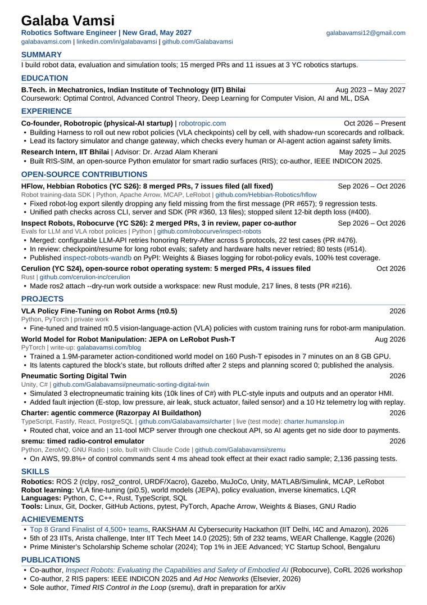
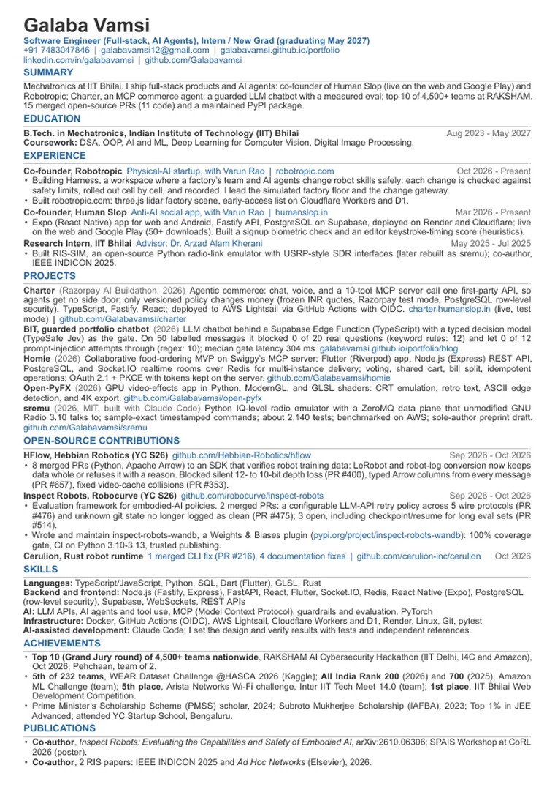
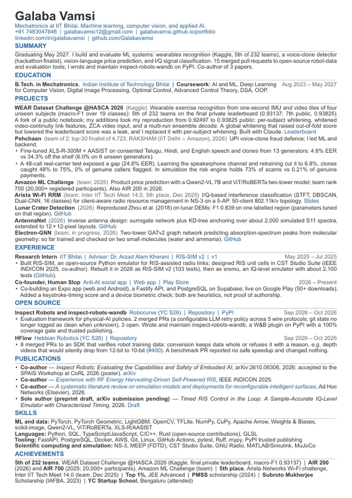

Robotics
1 pageRobotics software, simulation, and controls. Leads with the open-source work at HFlow, Inspect Robots, and Cerulion, then ROS 2 and Gazebo, MuJoCo, MATLAB/Simulink, and Unity projects.
Resume
Same facts, three emphases. Each is one page and ATS-friendly, with live links to the pull requests, repositories, and papers behind every line.

Robotics software, simulation, and controls. Leads with the open-source work at HFlow, Inspect Robots, and Cerulion, then ROS 2 and Gazebo, MuJoCo, MATLAB/Simulink, and Unity projects.

Full-stack, AI agents, and open-source engineering. Leads with Human Slop, then Charter, Pehchaan, sremu, and the pull requests to YC-backed open-source projects.

Machine learning, computer vision, and applied AI. Leads with the Kaggle WEAR result, the Pehchaan voice-clone detector, and the Amazon ML Challenge entries.
Not sure which? Send whichever is closest and ask for the others. Email: galabavamsi12@gmail.com